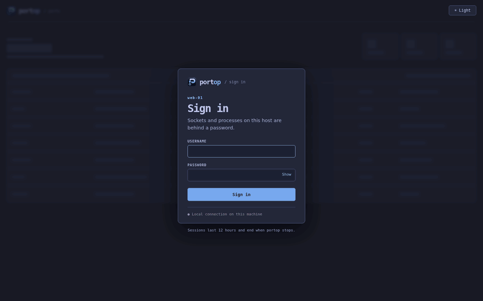

Web dashboard --web
portop --web serves a dashboard on 127.0.0.1:8088 with search, process details and confirmed SIGTERM/SIGKILL. With --web-auth it adds a sign-in page, can listen beyond loopback and serves HTTPS via --web-tls-cert and --web-tls-key.